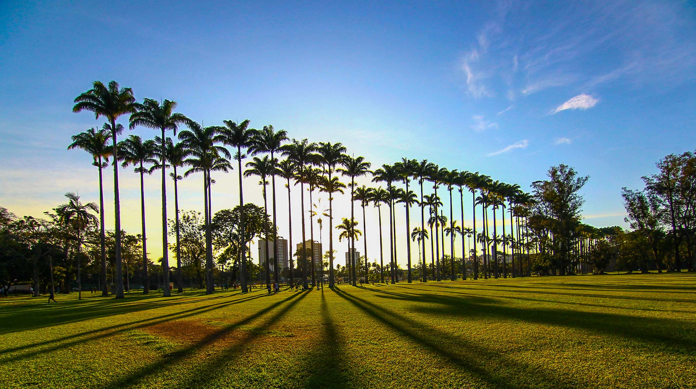
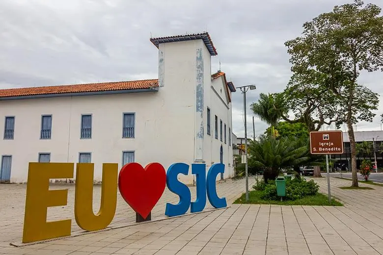
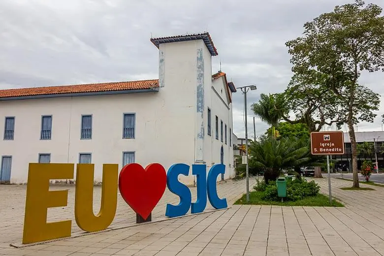
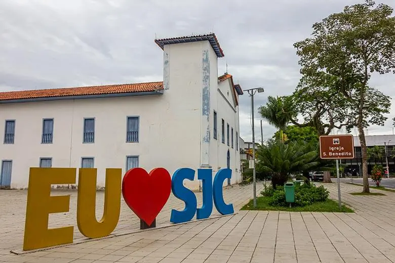

São José dos Campos é um município brasileiro no interior do estado de São Paulo. Está situado no Vale do Paraíba Paulista, a leste da capital do estado, distando desta cerca de 81 km. É sede da Região Metropolitana do Vale do Paraíba e Litoral Norte e ocupa uma área de 1 099,409km², da qual 353,9 km² estão em perímetro urbano. Em 2021, sua população foi estimada pelo IBGE em 737 310 habitantes, sendo o quinto mais populoso de São Paulo e o 23.º de todo o país, além de ser o segundo município mais populoso do interior do Brasil, ficando atrás somente de Campinas.
Curiosidades
- O motor do carro a álcool foi criado no Centro Técnico Aeroespacial de São José dos Campos e foi testado em três tipos de carro diferentes: Fusca 1300, Gurgel Xavante e Dodge Polara 1800.
- Outro cenário curioso da tecnologia que foi bem explorado por SJC, foi a criação da urna eletrônica em meados de 1996. Este projeto foi fruto de uma parceria do CTA (Centro Técnico Aeroespacial) e INPE (Instituto Nacional de Pesquisas Espaciais). Graças a cidade de São José dos Campos, nosso processo de votação foi modernizado.
- O novo cartão postal de SJCampos, a ponte estaiada, é também conhecida como a ponte do bolinho caipira devido ao seu formato!
- Metade da população é formada por capivaras!
- O indice de condutores que utilizam a seta é a baixo do esperado pelo DETRAN.

 


